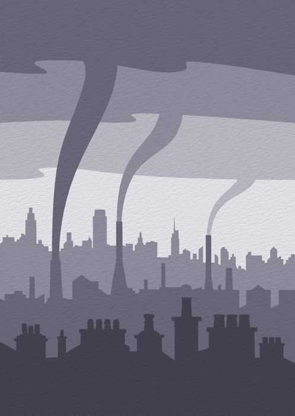

La pollution numérique et le E-commerce, un impact important sur l’environnement.
TEMPS DE LECTURE : 2 MIN 30
Source : Pinterest UI8
Selon l’ADEME (Agence de la transition écologique), la pollution numérique représente aujourd’hui 4% des émissions de gaz à effets de serre (GES) dans le monde et ce chiffre ne cesse d’augmenter.
LA POLLUTION NUMÉRIQUE

Source : Pinterest Artyfactory
La pollution numérique regroupe tous les effets néfastes des technologies sur l’environnement.
Cette pollution est due à plusieurs acteurs :
- Les datacenters: ce sont des centres de stockages de données qui pour être alimentés utilisent beaucoup d’électricité. Ils représentent 25% de la pollution numérique.
- Les fabricants de matériaux: la fabrication des appareils électroniques dont les composants utilisés (ex: minerais, métaux) sont toxiques pour l’environnement et l’Homme mais également consommateur d’énergie. Les équipements des consommateurs représentent 47% de la pollution numérique, fabrication et utilisation comprises.
- Les infrastructures réseau: ce sont les équipements et périphériques reliés physiquement ou virtuellement entre eux. Elles représentent 28% de la pollution numérique.
Mais le E-commerce génère également une pollution numérique et environnementale. En consultant internet, en surfant sur le site commerçant, en sélectionnant un article, en le payant et en consultant les mails de suivi de colis, nous polluons. En effet, nous sollicitions notre ordinateur, notre box internet, mais aussi des datacenters.
Toutes ces actions insignifiantes sont énergivores et polluantes. Ainsi une commande sur internet revient à:
- La consommation de 7 g de fer, soit le poids d'une pièce de 1 euro
- L’émission dans l'eau de 1,5mg de phosphate
- 12 min d'utilisation d'une ampoule de 60 W
- Une consommation d'énergie fossile de 3 g de pétrole
- L’émission de 12 g de CO2 soit 1 km en voiture.
LE E-COMMERCE
Nombreux pensent que passer une commande sur internet est moins polluant que se déplacer en voiture, or la réalité est tout autre. Le problème du E-commerce, c’est qu’il pollue de plusieurs façons: l’utilisation d’internet, les livraisons, les emballages…
En naviguant sur internet nous sollicitions énormément de datacenters, et des milliers de serveurs (permettent d’héberger les sites et de naviguer entre eux) qui ont besoin d’être constamment refroidis. Ils sont donc extrêmement énergivores. Leurs utilisations, avec celles des réseaux et des terminaux, représentent 55% de la consommation électrique du secteur de l’informatique. Il y a toutes les heures plus de 180 millions de requêtes qui sont effectuées sur Google. Chaque requête Google émet 7 grammes de CO2. Je vous laisse faire le calcul de ce que représentent les requêtes Google par jour!
Maintenant, abordons le sujet des livraisons soit le moyen de pollution le plus évident Depuis les 20 dernières années, le E-commerce explose. Il y a de plus en plus de consommateurs en ligne et donc plus de livraisons. En 2004, le nombre de colis livré à travers le monde était de 604 millions, en 2020, il est passé à 1 milliard. En France, en 2018, le transport des marchandises représente près de 30% des GES et ce chiffre ne cesse d’augmenter.
Récemment, les consommateurs réalisent de plus en plus de livraisons express. Les livraisons en moins de 24h se multiplient. Or, contrairement aux livraisons standards, elles obligent à livrer en urgence en petites quantités, et multiplient ainsi les trajets. Elles augmentent, de ce fait, la consommation de carburants et les GES.
Chaque année, milliards de tonnes de CO26 sont émises à cause des transports de marchandises. En 2019, aux Etats-Unis, les émissions de GES de FedEx, d’UPS et d’US Postal en représentaient en 0.5%. Soit l’équivalent d’émissions annuelles de plus de 7 millions de voitures. Les renvois augmentent également l’impact environnemental, puisqu’ils doublent l’émission de CO2.
Amazon émet au total 8,87 millions de tonnes de CO2 par an — soit l’équivalent des émissions annuelles de la Bolivie.
En plus de la livraison, les emballages des colis polluent également. Ils sont souvent composés de plastique non-recyclable, et sont souvent trop volumineux par rapport à la taille du colis. Ce qui entraînerait un gâchis d’espace de 25% dans les cargaisons des transports.
Le E-commerce n’est pas près de s’arrêter, car en France, en 2019, son chiffre d’affaires s’élève à plus de 100 milliards d’euros, c’est une hausse de 11.6% par rapport à 2018.